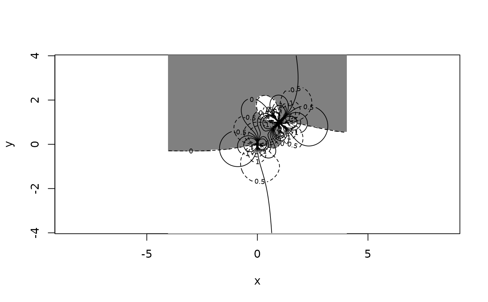
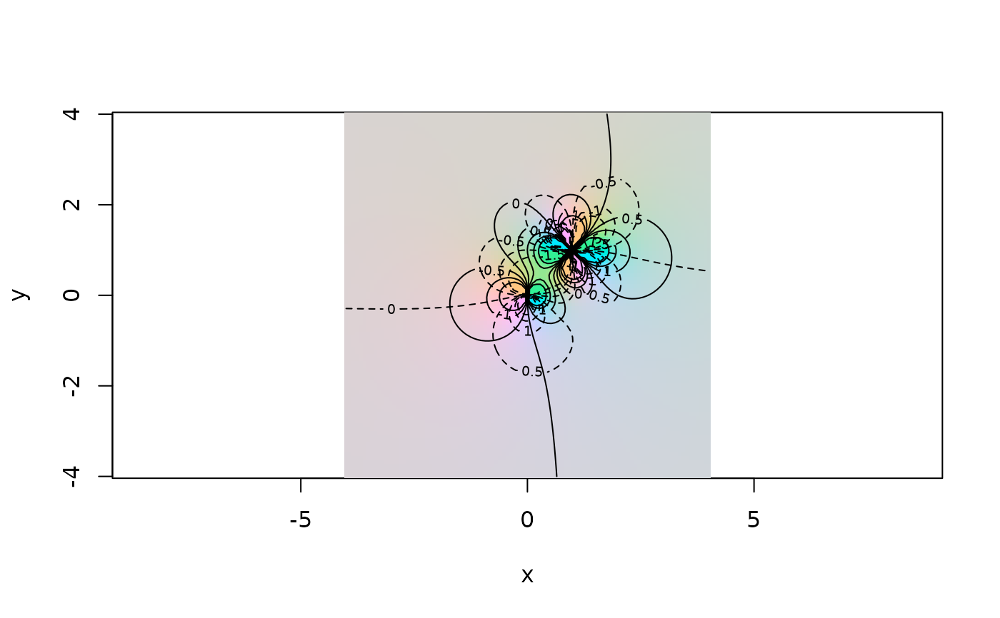
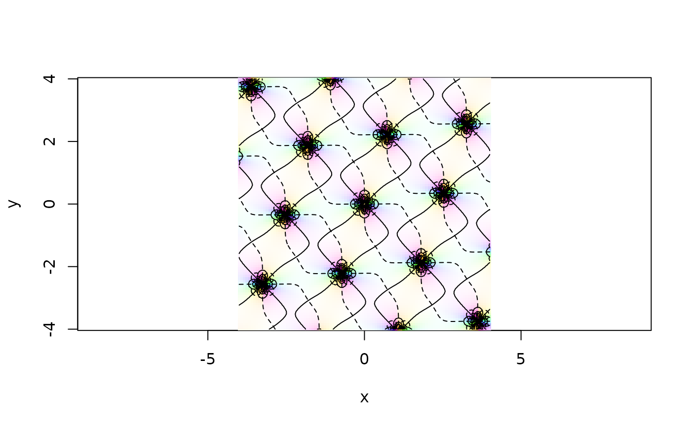

Visualization of complex functions
view.RdVisualization of complex functions using colour maps and contours
view(x, y, z, scheme = 0, real.contour = TRUE, imag.contour = real.contour,
default = 0, col="black", r0=1, power=1, show.scheme=FALSE, ...)Arguments
- x,y
Vectors showing real and imaginary components of complex plane; same functionality as arguments to
image()- z
Matrix of complex values to be visualized
- scheme
Visualization scheme to be used. A numeric value is interpreted as one of the (numbered) provided schemes; see source code for details, as I add new schemes from time to time and the code would in any case dominate anything written here.
A default of zero corresponds to Thaller (1998): see references. For no colour (ie a white background), set
schemeto a negative number.If
schemedoes not correspond to a built-in function, theswitch()statement “drops through” and provides a white background (use this to show just real or imaginary contours; a value of \(-1\) will always give this behaviour)If not numeric,
schemeis interpreted as a function that produces a colour; see examples section below. See details section for some tools that make writing such functions easier- real.contour,imag.contour
Boolean with default
TRUEmeaning to draw contours of constant \(Re(z)\) (resp: \(Im(z)\)) andFALSEmeaning not to draw them- default
Complex value to be assumed for colouration, if
ztakesNAor infinite values; defaults to zero. Set toNAfor no substitution (ie plotz“as is”); usually a bad idea- col
Colour (sent to
contour())- r0
If
scheme=0, radius of Riemann sphere as used by Thaller- power
Defines a slight generalization of Thaller's scheme. Use high values to emphasize areas of high modulus (white) and low modulus (black); use low values to emphasize the argument over the whole of the function's domain.
This argument is also applied to some of the other schemes where it makes sense
- show.scheme
Boolean, with default
FALSEmeaning to perform as advertized and visualize a complex function; andTRUEmeaning to return the function corresponding to the value of argumentscheme- ...
Details
The examples given for different values of scheme are intended
as examples only: the user is encouraged to experiment by passing
homemade colour schemes (and indeed to pass such schemes to the
author).
Scheme 0 implements the ideas of Thaller: the complex plane is mapped
to the Riemann sphere, which is coded with the North pole white
(indicating a pole) and the South Pole black (indicating a zero). The
equator (that is, complex numbers of modulus r0) maps to
colours of maximal saturation.
Function view() includes several tools that simplify the
creation of suitable functions for passing to scheme.
These include:
breakup():Breaks up a continuous map:
function(x){ifelse(x>1/2,3/2-x,1/2-x)}g():maps positive real to \([0,1]\):
function(x){0.5+atan(x)/pi}scale():scales range to \([0,1]\):
function(x){(x-min(x))/(max(x)-min(x))}wrap():wraps phase to \([0,1]\):
function(x){1/2+x/(2*pi)}
Note
Additional ellipsis arguments are given to both image() and
contour() (typically, nlevels). The resulting
warning() from one or other function is suppressed by
suppressWarnings().
References
B. Thaller 1998. Visualization of complex functions, The Mathematica Journal, 7(2):163–180
Examples
n <- 100
x <- seq(from=-4,to=4,len=n)
y <- x
z <- outer(x,1i*y,"+")
view(x,y,limit(1/z),scheme=2)
view(x,y,limit(1/z),scheme=18)
view(x,y,limit(1/z+1/(z-1-1i)^2),scheme=5)

view(x,y,limit(1/z+1/(z-1-1i)^2),scheme=17)

view(x,y,log(0.4+0.7i+log(z/2)^2),main="Some interesting cut lines")
view(x,y,z^2,scheme=15,main="try finer resolution")
view(x,y,sn(z,m=1/2+0.3i),scheme=6,nlevels=33,drawlabels=FALSE)
view(x,y,limit(P(z,c(1+2.1i,1.3-3.2i))),scheme=2,nlevels=6,drawlabels=FALSE)

view(x,y,limit(Pdash(z,c(0,1))),scheme=6,nlevels=7,drawlabels=FALSE)
view(x,x,limit(zeta(z,c(1+1i,2-3i))),nlevels=6,scheme=4,col="white")
 # Now an example with a bespoke colour function:
fun <- function(z){hcl(h=360*wrap(Arg(z)),c= 100 * (Mod(z) < 1))}
view(x,x,limit(zeta(z,c(1+1i,2-3i))),nlevels=6,scheme=fun)
view(scheme=10, show.scheme=TRUE)
#> function (z)
#> {
#> hsv(h = wrap(Arg(z)), v = scale(exp(-Mod(z))))
#> }
#> <bytecode: 0x55d128988cf0>
#> <environment: 0x55d128d63208>
# Now an example with a bespoke colour function:
fun <- function(z){hcl(h=360*wrap(Arg(z)),c= 100 * (Mod(z) < 1))}
view(x,x,limit(zeta(z,c(1+1i,2-3i))),nlevels=6,scheme=fun)
view(scheme=10, show.scheme=TRUE)
#> function (z)
#> {
#> hsv(h = wrap(Arg(z)), v = scale(exp(-Mod(z))))
#> }
#> <bytecode: 0x55d128988cf0>
#> <environment: 0x55d128d63208>